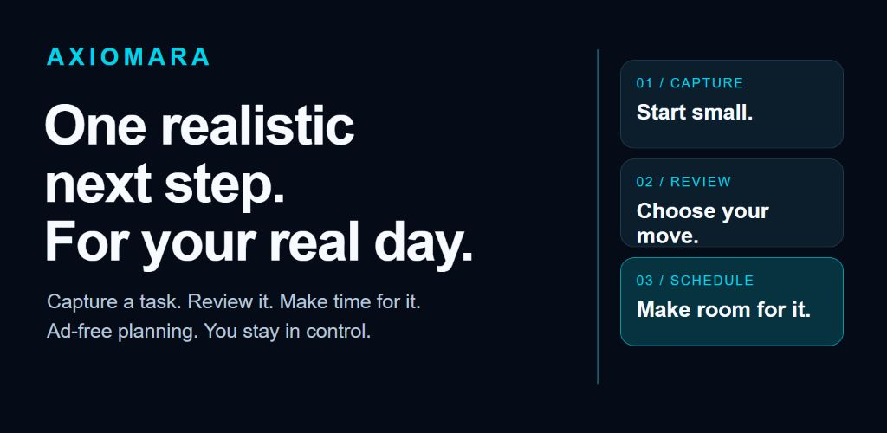

TODAY / YOUR CHECK-INONLINE
78CLARITY
ENERGY64%MOMENTUMBUILDING ↗
3 priorities1 conflict resolved2 paths compared
Illustrative product state
Planning that fits real life
Axiomara connects what you need to do, what you are building, how your day is going, and what may happen next—then helps you choose a move you can actually make.
Illustrative product state

Tools for your day
Keep goals, tasks, and habits together. Ask AI or SI Chat for help, see your patterns, and explore possible future outcomes before choosing what to do.
Check how your day is going and review one manageable next step.
ORIENTTurn real life into structured tasks, goals, habits, and notes without losing the reason behind them.
CAPTUREReview saved work in My plan. Use Schedule for dates and start times, and keep a planned action distinct from a hard deadline.
SEQUENCEAsk a real planning question and receive a contextual response grounded in your selected work, constraints, and time.
PLANInvestigate complex decisions through intent, evidence, assumptions, limits, scenarios, and executable next steps.
REASONIn Insights, compare possible outcomes. Review the horizon, assumptions, and uncertainty before deciding what to do.
ANTICIPATETurn completed work into visible evidence of progress through XP, levels, streaks, and reflection.
ADVANCEReview reminders and choose the notifications and timing that help your day.
MONITORManage consent, privacy, account access, AI credits, notifications, and every action that crosses a trust boundary.
CONTROLIntelligence that answers the actual question
A useful response must understand the request, use the right context, separate evidence from inference, and leave the decision with you.
What time should I go to the store? Use my grocery task and today’s schedule.
Go at 6:10 p.m. Your 5:00–5:45 commitment ends close to the store, and leaving a 15-minute buffer avoids the later conflict at 7:30.
Your day, at your pace
Explore a possibility
Open Insights, then find Compose a what-if path and choose a task. Compare Complete, Delay, or Remove, then use View comparison to read the calculated result. These previews do not complete, reschedule, or delete your saved task.
The latest tested repair clears old readiness and View after an operation edit. Press Compare to calculate the new inputs; the previous preview is not a result for an unsubmitted draft.
Check the planning horizon, evidence, assumptions, and missing information. A modeled outcome helps you review a choice; it does not promise what will happen.
Power with boundaries
Axiomara is designed to make context usable while keeping important decisions visible and reversible wherever possible.
Axiomara does not display ads or require anyone to watch an ad to use the product.
Free tools are separate from cloud questions. Review selected context, consent, and the displayed credit quote before confirming. Eligible monthly credits vary by account; Settings shows your allowance, balance, and reset.
Recommendations can be challenged, revised, ignored, or replaced. The decision remains yours.
Privacy, support, billing guidance, and account deletion stay available through clear public routes.
Current access
Axiomara is publicly available on Google Play. Install and update Axiomara through the store. For installation help, visit support. This site presents the product tools and the required support and policy information; it does not provide an application download.
Guide updated October 23, 2026. Screen names can vary by installed version. Tested and merged repairs do not establish a new store release. See updates and availability.
Get Axiomara on Google Play